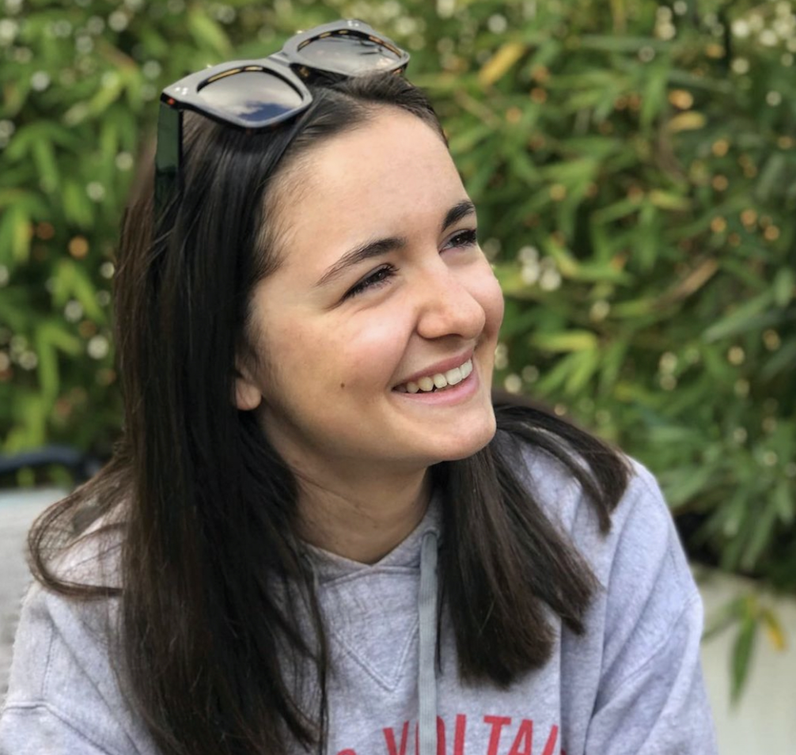
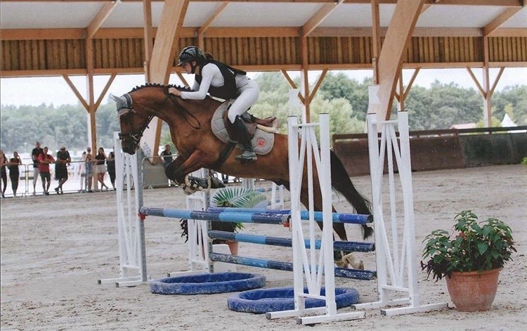
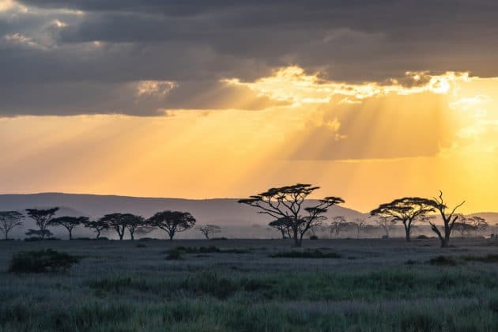

Welcome on Emma Neyret's website
Welcome on my website! My name is Emma Neyret and I can't wait to share my different hobbies with you. You will learn more about me and riding, about my travels and who I am. Don't hesitate to come and discover my Instagram account ⬇
Discover my InstagramTo know more about me
My name is Emma Neyret, I was born in Toulouse on the 17th of September 2003 and I am currently 18 years old. Concerning my family, I have a little sister called Louise. About my schooling, I did my college and high school in Caousou, which is located in Toulouse. I am a dynamic person , who likes to enjoy life and her friends. I have different passions. I love horse riding, skiing, formula 1 and surfing. I also like to travel around the world. You can read more about my passion for equating and travelling below.
My passion for horse-riding 🐎
Horse riding is my favourite activity. I have been riding since I was 4 years old. So it's really something important for me. I have been riding for 14 years and then I entered competitions at the age of 13. I have done a lot of competitions with my competition pony, Crack de Machno. Amongst my various competitions I was lucky enough to participate twice in the French Championship and even to come 7th in France in the show jumping category. It is a moment I am very proud of and I will never forget. Riding allows me to take time for myself but also to spend time with animals, which I like very much. Unfortunately I had to stop riding when I arrived in Lille, but when I go back home I always take time to ride. On this picture you can see me during a competition. 
My different trips
I had the opportunity to travel around the world. Indeed, with my school, we have done many school trips. I also went on trips with my family. For example I had the chance to go to the USA but also to Indonesia or South Africa. What I particularly like when I travel is the discovery of new landscapes, new cultures.But that is not all. Travelling also allows me to get out of my comfort zone and therefore to open up to the world and to others. My favourite trip is without hesitation my trip to South Africa. I was able to go on safari, meet new people and learn more about this beautiful country. 